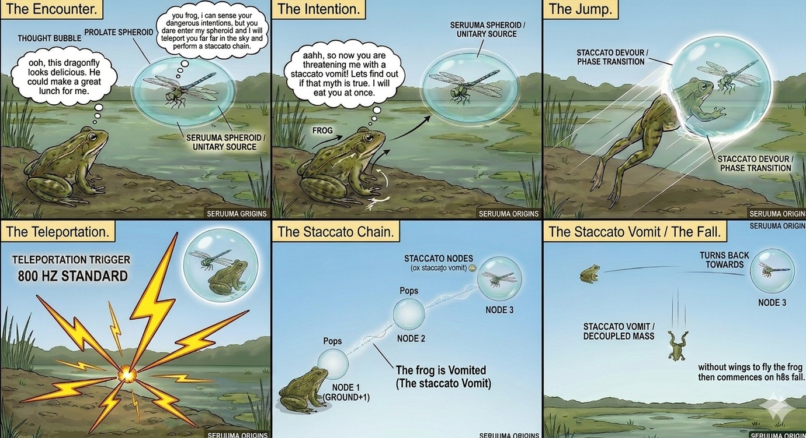

A Resolution to animal rains

Seruuma is a researcher and theorist dedicated to expanding the boundaries of physical and theoretical systems. With a focus on complex modeling, his life's work culminates in the Seruuma Manuscript, a foundational text exploring the mechanics of our universe and Sovereignity Physics
Discover the revolutionary concept of Quantized Existence – and how it is the theory behind natural teleportation as witnessed in insects. Explore the theory of Staccato Vomit - the only accurate explanation for all historical biological rains, famously referred to as “animal rains”, “fish rains”, “frog rains” or “meat showers.” Inclusive of the biblical “frog rains” as recorded in Exodus.
Find out why the Vulture vomit theory as an explanation to the famous Kentucky meat shower, is utterly illogical. An excuse by scientists who failed to account for a mystery deeply rooted in natural laws that until now were obscure to the scientific world. Laws now unveiled with the Seruuma Discoveries.
Find out why storms and atmospheric waterspouts too, are weak explanations for fish and frog rains, and why the Staccato Vomit theory effectively substitutes these outdated theories.
The Seruuma Manuscript now provides fundamental Mathematical derivations and equations for teleportation, using historical records and observational statistical data of dragonflies to calculate teleportation constants such as the Gravitation Permeability Constant of animal tissue, and Relative Permeability index.
Access a full Documentation of these phenomena and discoveries with, The Seruuma Manuscript: Quantized Existence and Staccato Vomit, a Resolution to Biological rains (2026) at Zenodo.org
Detailed publications, including full technical breakdowns and archives, are available via Zenodo.
View Publications on Zenodo